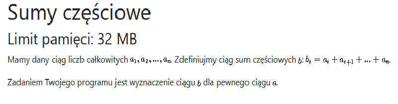

- Jakimi fragmentami kodu chciałbym się pochwalić?
- W projektach, które opisałem w zakładce "Projekty", kod pisany był bardzo prosto, bez żadnych sztuczek implementacyjnych. Z tego względu zamieszczam kilka problemów, króki opis algorytmu i (ciekawą) część implementacji w C++.
Sumy częściowe
Każdy wyraz ciągu b można policzyć osobno, sumując kolejne wyrazy ciągu a. To podejście ma jednak złożoność kwadratową. Stosuję lepszą metodę, sumuję wszystkie wyrazy ciągu a i w ten sposób otrzymuje b(1). Zauważam, że b(i) = b(i-1) - a(i), dla i = 2,3,...,n i wyliczam wszystkie pozostałe b(i).
int n,t[1000001];
long long res;
int main()
{
std::ios_base::sync_with_stdio(0);
cin>>n;
for(int i=1; i<=n; i++){
cin>>t[i];
res+=t[i];
}
for(int i=1; i<=n; i++){
res-=t[i-1];
cout << res <<" ";
}
return 0;
}
Cięcie prostokątów

Wynik dla prostokąta o wymiarach (a,b) będzie równy sumie wyników najkorzystniejszego z podziałów tego prostokąta + 1. Można by się wywoływać rekurencyjnie i liczyć to samo dla mniejszych prostokątów aż natrafi się na kwadraty. Jednakże, wywołując rekurencyjnie, często liczy się wielokrotnie wynik dla tych samych wymiarów prostokątów. Z tego względu wykorzystam programowanie dynamiczne, co zaoszczędzi mi wielu operacji.
#include <bits/stdc++.h>
using namespace std;
int dp[501][501],a,b;
int main()
{
cin>>a>>b;
for(int i=1; i<=a; i++){
for(int j=1; j<=b; j++){
dp[i][j]=INT_MAX;
if(i==j){
dp[i][j]=0;
}
else{
for(int k=1; k<i; k++){
dp[i][j]=min(dp[i][j], dp[k][j]+dp[i-k][j]+1);
}
for(int k=1; k<j; k++){
dp[i][j]=min(dp[i][j], dp[i][k]+dp[i][j-k]+1);
}
}
}
}
cout<<dp[a][b];
return 0;
}Dijkstra
Na koniec wrzucam moją implementację algorytmu dijsktry, czyli rozwiązania problemu znajdowania najkrótszej ścieżki w grafie (w tym przypadku skierowanym).
#include <bits/stdc++.h>
#define ll long long
using namespace std;
ll n,m,x=1e18;
vector <ll> dis;
bool vis[1000001],k[1000001];
priority_queue <pair<ll,ll>> q;
vector<pair<ll,ll>> adj[1000001];
int main()
{
cin>>n>>m;
for(int i=1; i<=m; i++){
ll a,b,c;
cin>>a>>b>>c;
adj[a].push_back({b,c});
}
dis.resize(n+2,x);
dis[1]=0;
q.push({0,1});
while(!q.empty()){
ll v=q.top().second;
q.pop();
if(!vis[v]){
vis[v]=true;
for(auto it: adj[v]){
if(dis[v]+it.second<dis[it.first]){
dis[it.first]=dis[v]+it.second;
q.push({-dis[it.first],it.first});
}
}
}
}
for(int i=1; i<=n; i++){
cout<<dis[i]<<" ";
}
return 0;
}